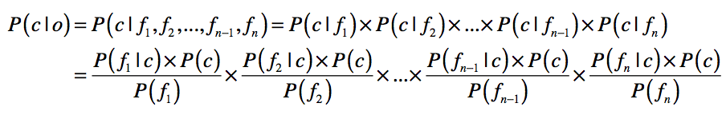
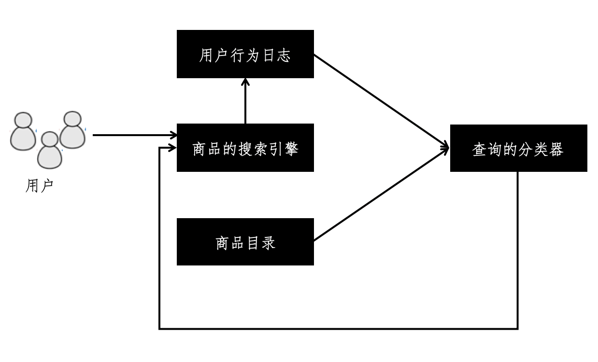

- 01 二进制：不了解计算机的源头，你学什么编程.md.html
- 02 余数：原来取余操作本身就是个哈希函数.md.html
- 03 迭代法：不用编程语言的自带函数，你会如何计算平方根？.md.html
- 04 数学归纳法：如何用数学归纳提升代码的运行效率？.md.html
- 05 递归（上）：泛化数学归纳，如何将复杂问题简单化？.md.html
- 06 递归（下）：分而治之，从归并排序到MapReduce.md.html
- 07 排列：如何让计算机学会“田忌赛马”？.md.html
- 08 组合：如何让计算机安排世界杯的赛程？.md.html
- 09 动态规划（上）：如何实现基于编辑距离的查询推荐？.md.html
- 10 动态规划（下）：如何求得状态转移方程并进行编程实现？.md.html
- 11 树的深度优先搜索（上）：如何才能高效率地查字典？.md.html
- 12 树的深度优先搜索（下）：如何才能高效率地查字典？.md.html
- 13 树的广度优先搜索（上）：人际关系的六度理论是真的吗？.md.html
- 14 树的广度优先搜索（下）：为什么双向广度优先搜索的效率更高？.md.html
- 15 从树到图：如何让计算机学会看地图？.md.html
- 16 时间和空间复杂度（上）：优化性能是否只是“纸上谈兵”？.md.html
- 17 时间和空间复杂度（下）：如何使用六个法则进行复杂度分析？.md.html
- 18 总结课：数据结构、编程语句和基础算法体现了哪些数学思想？.md.html
- 19 概率和统计：编程为什么需要概率和统计？.md.html
- 20 概率基础（上）：一篇文章帮你理解随机变量、概率分布和期望值.md.html
- 21 概率基础（下）：联合概率、条件概率和贝叶斯法则，这些概率公式究竟能做什么？.md.html
- 22 朴素贝叶斯：如何让计算机学会自动分类？.md.html
- 23 文本分类：如何区分特定类型的新闻？.md.html
- 24 语言模型：如何使用链式法则和马尔科夫假设简化概率模型？.md.html
- 25 马尔科夫模型：从PageRank到语音识别，背后是什么模型在支撑？.md.html
- 26 信息熵：如何通过几个问题，测出你对应的武侠人物？.md.html
- 27 决策树：信息增益、增益比率和基尼指数的运用.md.html
- 28 熵、信息增益和卡方：如何寻找关键特征？.md.html
- 29 归一化和标准化：各种特征如何综合才是最合理的？.md.html
- 30 统计意义（上）：如何通过显著性检验，判断你的A_B测试结果是不是巧合？.md.html
- 31 统计意义（下）：如何通过显著性检验，判断你的A_B测试结果是不是巧合？.md.html
- 32 概率统计篇答疑和总结：为什么会有欠拟合和过拟合？.md.html
- 33 线性代数：线性代数到底都讲了些什么？.md.html
- 34 向量空间模型：如何让计算机理解现实事物之间的关系？.md.html
- 35 文本检索：如何让计算机处理自然语言？.md.html
- 36 文本聚类：如何过滤冗余的新闻？.md.html
- 37 矩阵（上）：如何使用矩阵操作进行PageRank计算？.md.html
- 38 矩阵（下）：如何使用矩阵操作进行协同过滤推荐？.md.html
- 39 线性回归（上）：如何使用高斯消元求解线性方程组？.md.html
- 40 线性回归（中）：如何使用最小二乘法进行直线拟合？.md.html
- 41 线性回归（下）：如何使用最小二乘法进行效果验证？.md.html
- 42 PCA主成分分析（上）：如何利用协方差矩阵来降维？.md.html
- 43 PCA主成分分析（下）：为什么要计算协方差矩阵的特征值和特征向量？.md.html
- 44 奇异值分解：如何挖掘潜在的语义关系？.md.html
- 45 线性代数篇答疑和总结：矩阵乘法的几何意义是什么？.md.html
- 46 缓存系统：如何通过哈希表和队列实现高效访问？.md.html
- 47 搜索引擎（上）：如何通过倒排索引和向量空间模型，打造一个简单的搜索引擎？.md.html
- 48 搜索引擎（下）：如何通过查询的分类，让电商平台的搜索结果更相关？.md.html
- 49 推荐系统（上）：如何实现基于相似度的协同过滤？.md.html
- 50 推荐系统（下）：如何通过SVD分析用户和物品的矩阵？.md.html
- 51 综合应用篇答疑和总结：如何进行个性化用户画像的设计？.md.html
- 导读：程序员应该怎么学数学？.md.html
- 开篇词 作为程序员，为什么你应该学好数学？.md.html
- 数学专栏课外加餐（一） 我们为什么需要反码和补码？.md.html
- 数学专栏课外加餐（三）：程序员需要读哪些数学书？.md.html
- 数学专栏课外加餐（二） 位操作的三个应用实例.md.html
- 结束语 从数学到编程，本身就是一个很长的链条.md.html
- 捐赠
48 搜索引擎（下）：如何通过查询的分类，让电商平台的搜索结果更相关？
你好，我是黄申。
上一节，我给你阐述了如何使用哈希的数据结构设计倒排索引，并使用倒排索引加速向量空间模型的计算。倒排索引提升了搜索执行的速度，而向量空间提升了搜索结果的相关性。
可是，在不同的应用场景，搜索的相关性有不同的含义。无论是布尔模型、向量空间模型、概率语言模型还是其他任何更复杂的模型，都不可能“一招鲜，吃遍天”。今天，我就结合自己曾经碰到的一个真实案例，为你讲解如何利用分类技术，改善搜索引擎返回结果的相关性。
你可能会觉得奇怪，这分类技术，不是监督式机器学习中的算法吗？它和信息检索以及搜索技术有什么关系呢？且听我慢慢说来。
电商搜索的难题
我曾经参与过一个电商的商品搜索项目。有段时间，用户时常反馈这么一个问题，那就是关键词搜索的结果非常不精准。比如搜索“牛奶”，会出现很多牛奶巧克力，甚至连牛奶色的连衣裙，都跑到搜索结果的前排了，用户体验非常差。但是，巧克力和连衣裙这种商品标题里确实存在“牛奶”的字样，如果简单地把“牛奶”字眼从巧克力和服饰等商品标题里去除，又会导致搜索“牛奶巧克力”或者“牛奶连衣裙”时无法展示相关的商品，这肯定也是不行的。
这种搜索不精确的情况十分普遍，还有很多其他的例子，比如搜索“橄榄油”的时候会返回热门的“橄榄油发膜”或“橄榄油护手霜”，搜索“手机”的时候会返回热门的“手机壳”和“手机贴膜”。另外，商品的品类也在持续增加，因此也无法通过人工运营来解决。
为了解决这个问题，首先我们来分析一下产生问题的主要原因。目前多数的搜索引擎实现，所采用的都是类似向量空间模型的相关性模型。所以在进行相关性排序的时候，系统主要考虑的因素都是关键词的tf-idf、文档的长短、查询的长短等因素。这种方式非常适合普通的文本检索，在各大通用搜索引擎里也被证明是行之有效的方法之一。但是，经过我们的分析，这种方式并不适合电子商务的搜索平台，主要原因包括这样几点：
第一点，商品的标题都非常短。电商平台上的商品描述，包含的内容太多，有时还有不少广告宣传，这些不一定是针对产品特性的信息，如果进入了索引，不仅加大了系统计算的时间和空间复杂度，还会导致较低的相关性。所以，商品的标题、名称和主要的属性成为搜索索引关注的对象，而这些内容一般短小精悍，不需要考虑其长短对于相关性衡量的影响。
第二点，关键词出现的位置、词频对相关性意义不大。如上所述，正是由于商品搜索主要关注的是标题等信息浓缩的字段，因此某个关键词出现的位置、频率对于相关性的衡量影响非常小。如果考虑了这些，反而容易被别有用心的卖家利用，进行不合理的关键词搜索优化（SEO），导致最终结果的质量变差。
第三点，用户的查询普遍比较短。在电商平台上，顾客无需太多的关键词就能定位大概所需，因此查询的字数多少对于相关性衡量也没有太大意义。
因此，电商的搜索系统不能局限于关键词的词频、出现位置等基础特征，更应该从其他方面来考虑。
既然最传统的向量空间模型无法很好地解决商品的搜索，那么我们应该使用什么方法进行改进呢？回到我们之前所发现的问题，实际上主要纠结在一个“分类”的问题上。例如，顾客搜索“牛奶”字眼的时候，系统需要清楚用户是期望找到饮用的牛奶，还是牛奶味的巧克力或饼干。从这个角度出发考虑，我们很容易就考虑到了，是不是可以首先对用户的查询，进行一个基于商品目录的分类呢？如果可以，那么我们就能知道把哪些分类的商品排在前面，从而提高返回商品的相关性。
查询的分类
说到查询的分类，我们有两种方法可以尝试。第一种方法是在商品分类的数据上，运用朴素贝叶斯模型构建分类器。第二种方法是根据用户的搜索行为构建分类器。
在第一种方法中，商品分类数据和朴素贝叶斯模型是关键。电商平台通常会使用后台工具，让运营人员构建商品的类目，并在每个类目中发布相应的商品。这个商品的类目，就是我们分类所需的类别信息。由于这些商品属于哪个类目是经过人工干预和确认的，因此数据质量通常比较高。我们可以直接使用这些数据，构造朴素贝叶斯分类器。这里我们快速回顾一下朴素贝叶斯的公式。

之前我们提到过，商品文描中噪音比较多，因此通常我们只看商品的标题和重要属性。所以，上述公式中的\(f\_1，f\_2，……，f\_k\)，表示来自商品标题和属性的关键词。
相对于第一种方法，第二种方法更加巧妙。它的核心思想是观察用户在搜词后的行为，包括点击进入的详情页、把商品加入收藏或者是添加到购物车，这样我们就能知道，顾客最为关心的是哪些类目。
举个例子，当用户输入关键词“咖啡”，如果经常浏览和购买的品类是国产冲饮咖啡、进口冲饮咖啡和咖啡饮料，那么这3个分类就应该排在更前面，然后将其它虽然包含咖啡字眼，但是并不太相关的分类统统排在后面。需要注意的是，这种方法可以直接获取P(C|f)，而无需通过贝叶斯理论推导。
上述这两种方法各有优劣。第一种方法的优势在于有很多的人工标注作为参考，因此不愁没有可用的数据。可是分类的结果受到商品分布的影响太大。假设服饰类商品的数量很多，而且有很多服饰都用到了“牛奶”的字眼，那么根据朴素贝叶斯分类模型的计算公式，“牛奶”这个词属于服饰分类的概率还是很高。第二种方法正好相反，它的优势在于经过用户行为的反馈，我们可以很精准地定位到每个查询所期望的分类，甚至在一定程度上解决查询季节性和个性化的问题。但是这种方法过度依赖用户的使用，面临一个“冷启动”的问题，也就说在搜索系统投入使用的初期，无法收集足够的数据。
考虑到这两个方法的特点，我们可以把它们综合起来使用，最简单的就是线性加和。
\(P(C|query)=w\_1·P\_1(C|query)+w\_2·P\_2(C|query)\)
其中，\(P\_1\)和\(P\_2\)分别表示根据第一种方法和第二种方法获得的概率，而权重\(w\_1\)和\(w\_2\)分别表示第一种方法和第二种方法的权重，可以根据需要设置。通常在一个搜索系统刚刚起步的时候，可以让\(w\_1\)更大。随着用户不断的使用，我们就可以让\(w\_2\)更大，让用户的参与使得系统更智能。
查询分类和搜索引擎的结合
一旦我们可以对商品查询进行更加准确地分类，那么就可以把这个和普通的搜索引擎结合起来。我使用下面的框架图来展示整个流程。

从这张图可以看到，我们使用商品目录打造一个初始版本的查询分类器。随着用户不断的使用这个搜索引擎，我们收集用户的行为日志，并使用这个日志改善查询的分类器，让它变得更加精准，然后再进一步优化搜索引擎的相关性。
我以Elasticsearch为例，讲一下如何利用分类的结果改变搜索的排序。
Elasticsearch是一个基于Lucene的搜索服务器，是流行的企业级搜索引擎之一，目前最新版已经更新到6.6.x。Elasticsearch是基于Lucene的架构，很多要素都是一脉相承的，例如文档和字段的概念、相关性的模型、各种模式的查询等。也正是这个原因，Elasticsearch默认的排序也采取了类似向量空间模型的方式。如果这种默认排序并不适用于商品搜索，那么我们要如何修改呢？
为了充分利用查询分类的结果，首先要达到这样的目标：对于给定的查询，所有命中的结果的得分都是相同的。至少有两种做法：修改默认的Similarity类的实现，或者是使用过滤查询（Filter Query）。
统一了基本的排序得分之后，我们就可以充分利用用户的行为数据，指导搜索引擎进行有针对性的排序改变，最终提升相关性。这里需要注意的是，由于这里排序的改变依赖于用户每次输入的关键词，因此不能在索引的阶段完成。
例如，在搜索“牛奶巧克力”的时候，理想的是将巧克力排列在前，而搜索“巧克力牛奶”的时候，理想的是将牛奶排列在前，所以不能简单地在索引阶段就利用文档提升（Document Boosting）或字段提升（Field Boosting）。
对于Elasticsearch而言，它有个强大的Boost功能，这个功能可以在查询阶段，根据某个字段的值，动态地修改命中结果的得分。假设我们有一个用户查询“米”，根据分类结果，我们知道“米”属于“大米”分类的概率为0.85，属于“饼干”和“巧克力”分类的概率都为0.03。根据这个分类数据，下面我使用了一段伪代码，展示了加入查询分类后的Elasticsearch查询。
{
"query": {
"bool": {
"must": {
"match_all": {
}
},
"should": [
{
"match": {
"category_name": {
"query": "大米",
"boost": 0.85
}
}
},
{
"match": {
"category_name": {
"query": "饼干",
"boost": 0.03
}
}
},
{
"match": {
"category_name": {
"query": "巧克力",
"boost": 0.03
}
}
}
],
"filter": {
"term": {"listing_title" : "米"}
}
}
}
}
其中最主要的部分是增加了should的查询，针对最主要的3个相关分类进行了boost操作。如果使用这个查询进行搜索，你就会发现属于“大米”分类的商品排到了前列，更符合用户的预期，而且这完全是在没有修改索引的前提下实现的。
小结
相关性模型是搜索引擎非常核心的模块，它直接影响了搜索结果是不是满足用户的需求。我们之前讲解的向量空间模型、概率语言模型等常见的模型，逐渐成为了主流的相关性模型。不过这些模型通常适用于普通的文本检索，并没有针对每个应用领域进行优化。
在电商平台上，搜索引擎是帮助用户查找商品的好帮手。可是，直接采用向量空间模型进行排序往往效果不好。这主要是因为索引的标题和属性都很短，我们无法充分利用关键词的词频、逆文档频率等信息。考虑到搜索商品的时候，商品的分类对于用户更为重要，所以我们在设计相关性排序的时候需要考虑这个信息。
为了识别用户对哪类商品更感兴趣，我们可以对用户输入的查询进行分类。用于构建分类器的数据，可以是运营人员发布的商品目录信息，也可以是用户使用之后的行为日志。我们可以根据搜索系统运行的情况，赋予它们不同的权重。
如果我们可以对查询作出更为准确的分类，那么就可以使用这个分类的结果，来对原有搜索结果进行重新排序。现在的开源搜索引擎，例如Elasticsearch，都支持动态修改排序结果，为我们结合分类器和搜索引擎提供了很大的便利。
思考题
通过用户行为反馈的数据，构建查询分类的时候，我们把整个查询作为了一个单词或者词组来处理。也就是说直接获取了\(P(C|f)\)的值。如果我们把这个查询看作是多个词的组合，也就是说获取的是\(P(C|f1,f2,…,fn)\)，那我们可以如何改进这个基于用户行为反馈的分类模型呢？
欢迎留言和我分享，也欢迎你在留言区写下今天的学习笔记。你可以点击“请朋友读”，把今天的内容分享给你的好友，和他一起精进。
© 2019 - 2023 Liangliang Lee. Powered by gin and hexo-theme-book.